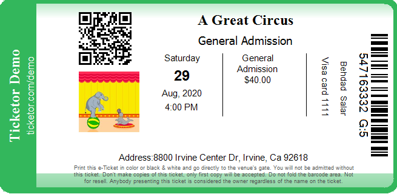
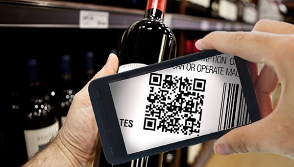

Frequently Asked Questions
RAIDAtech is a technology and software with services (SwS) company that creates innovative, next-generation authentication and anti-counterfeiting solutions. RAIDAtech is organized in the American state of Wyoming, which has been on the forefront of creating an environment friendly to new technologies.
RAIDA is a provisionally patented digital authentication and counterfeit detection solution with an immensely wide variety of potential applications.
RAIDA is an acronym for Redundant Array of Independent Detection Agents. The technology, developed by inventor Sean Worthington, can confirm the authenticity and ownership of any digital file. RAIDA is a post-blockchain process that solves physical integrity problem and prevents double spending. RAIDA can easily identify digital forgeries.
RAIDA is a post-blockchain and quantum-safe alternative to distributed ledger technology (DLT) and can be utilized to execute virtually any current or envisioned DLT function with greater privacy, more efficiency, more speed and at less cost (both financial and environmental).
RAIDA uses a double layered authentication procedure, unlike a distributed ledger. The first layer confirms authenticity using unique 32bit serial numbers. The second layer confirms ownership using a password associated with that serial number. Each time a digital property changes ownership, the password is changed and registered with the RAIDA.
Any digital property can be encoded with these tiny 400bit files. Verifying a digital file's authenticity requires sending tiny files to a network of no less than 25 RAIDA terminals, which spread throughout the world. A confirmation or denial is returned by the RAIDA servers, telling the owner whether they have an original or a counterfeit.
The process takes just milliseconds and can be used for any number of digital properties, such as: legal documents, images, movies, music, data files, etc. By embedding or associating a digital code within, RAIDA can also authenticate physical goods such as handbags, concert tickets, sports memorabilia, pharmaceuticals or wine bottles.
RAIDAtech creates bespoke solutions for each client, not "off-the-shelf" or "one-size-fits-all" products. Your RAIDAtech representative will meet with you to conduct an in-depth assessment of your needs with a consultative approach. They will recommend customized solutions tailored to fit your situation and your budget.
Most technological anti-counterfeiting solutions rely on online/cloud databases or blockchains to reconcile authentication data. These can easily be compromised or hacked. A counterfeiter can steal an authentic code and reproduce that code thousands or millions of times, so that each counterfeit will pass an authentication test.
RAIDA has three-sextillion times (3e+21) stronger security than cryptography. RAIDA simply cannot be hacked. RAIDA codes change every time they are authenticated—there can never be more than one valid authenticated item.
RAIDAtech solutions don't require a data intensive database or blockchain. They don't require huge amounts of electricity, circuitry or processing. RAIDA operates 41,000 times more efficiently than blockchain, making it more affordable for clients and much less harmful to the environment.
RAIDAtech is also faster than similar solutions. Time is money. It is 23,000 times faster than blockchain and capable of at least 160,000 transactions per second. RAIDA grows more efficient as the network grows, while blockchain bogs down and is not scalable.
RAIDA technology can protect physical products and goods in several ways, depending on the need of the client. Some clients want only the end user to be able to authenticate the product, while others want to the ability to verify authenticity at multiple stages in the supply chain.
- Imprinting serial numbers, barcodes or QR codes on/inside a product, label, or packaging to allow easy authentication with a smartphone.
- Implanting an RFID, NFC or Bluetooth chip into a product directly that can be authenticated with a smartphone.
RAIDA codes can easily be embedded in any sort of digital file, including text, photos, videos, or music to protect that file from being copied, altered or counterfeited.
RAIDAtech will provide each client with assistance in implementing solutions, ongoing technical support and continuous account management to ensure client satisfaction.
Use Case: Event Tickets

Each ticket is printed with a bar code and/or QR code readable by a smartphone. The codes can even be hidden under a scratch off! Purchaser can read the code with RAIDAtech App. RAIDA system verifies authenticity and changes the code so that no copies are valid. No need for expensive holograms or special colored inks.
Use Case: Wine/Spirits/Beverages

The label, cap or cork is imprinted with bar code and/or QR code readable by a smartphone. The codes can even be hidden under a scratch off! Purchaser can read the code with RAIDAtech App. RAIDA system verifies authenticity and changes the code so that no copies are valid.
Use Case: Digital Currency
RAIDAtech has developed a portfolio of cross-vertical applications for the utilization of digital currency.
CloudCoin is first cloud-based digital currency, and the first that cannot be hacked, counterfeited or permanently lost. It takes just milliseconds to trade and can be 100 percent anonymous. Each CloudCoin note has embedded serial numbers for authentication. The serial numbers ("passports") are sharded across the RAIDA network of nodes whenever a CloudCoin note is spent or transferred. The RAIDA network then reconstructs the shredded data, thereby re-authenticating it and eliminating the need for public ledgers and other blockchain inefficiencies.
Continuous advances in quantum computing, threaten to completely nullify the centerpiece of distributed ledger (blockchain) technology: asymmetric elliptic curve cryptography.
The Quantum Era is near, if not already upon us, as many experts believe. Quantum computers rely on quantum mechanical phenomena like entanglement and superposition to operate on quantum bits of data (qubits). Traditional bits are binary: they are either ones or they are zeros. Qubits, essentially, can be ones, zeros or both at the same time. A quantum computer is able to process data millions of times faster than a traditional one.
We are, then, already in a post-blockchain environment. The next generation of technology to protect privacy, financial security and intellectual property will be effective only if it is quantum-safe and provides solutions to blockchain's problems with scalability, efficiency, governance and ecological harm.
RAIDAtech possesses the world's only quantum-safe technology that solves these problems and more.
SwS is a next-generation service concept where all deliverables embody the DIFM (do-it-for-me) trend, upgrading "as-a-service" (SaS) to "with-service" for completely supported offerings packaged within applications. SwS results in superior user experiences that can only result from a human touch. SwS enterprises may take longer to scale, but are harder to replicate and have much greater potential for dominant market share.
SwS builds a foundation for ongoing success with each client through partnership, through proactive, regular communications, and through anticipatory support. SwS providers support clients throughout all stages of set-up, installation and implementation to guarantee solutions are employed to their fullest potential. SwS firms work hand-in-hand with clients to define goals and objectives and implement solutions to achieve those goals.
SwS firms utilize extensive product and industry sector expertise to anticipate and prevent problems, rather than troubleshoot problems after the fact. Providers communicate regularly to offer advice and suggestions and to ensure client satisfaction.
Yes, in some circumstances RAIDAtech does license the provisionally-patented RAIDA technology so clients can develop their own solutions using next-generation protocols. Clients generally find that it is more cost-efficient to let RAIDAtech's team of experts build solutions, but some clients have particular proprietary or security concerns requiring in-house development. Speak to your RAIDAtech representative.
Yes, RAIDAtech has begun forming joint ventures with partners to develop solutions jointly under specific circumstances. Speak to your RAIDAtech representative to begin exploring this option.